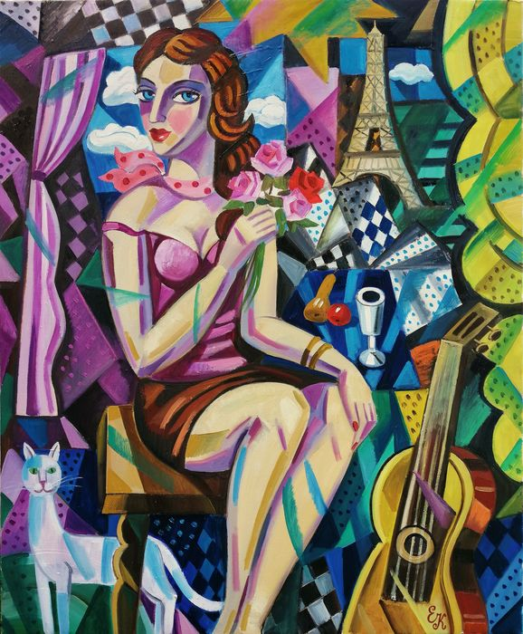
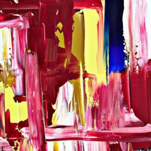

OUR ARTISTS
Leading established and emerging artists from the United States, Germany, Switzerland and other international locations are exhibited in our spacious Zürich Gallery in the old part of the town. Buy or rent art from a large selection of artworks displayed by style, artist, color, size or price.
 Liubou Sas is an award-winning
artist from Belarus, whose paintings
have been exhibited internationally.
Her discriminating still lifes,
abstractions and portraits are
created in a certain style that
is influenced by both expressionism
and Impressionism. What SAS is most
interested in in her artistic process
is the “person as image” and the
translation of her mind on canvas.
She mostly creates with acrylic
paints and oils. In 2020 she has
become accustomed to price
`Colors of Humanity – first place
– Everett, United Kingdom.
Liubou Sas is an award-winning
artist from Belarus, whose paintings
have been exhibited internationally.
Her discriminating still lifes,
abstractions and portraits are
created in a certain style that
is influenced by both expressionism
and Impressionism. What SAS is most
interested in in her artistic process
is the “person as image” and the
translation of her mind on canvas.
She mostly creates with acrylic
paints and oils. In 2020 she has
become accustomed to price
`Colors of Humanity – first place
– Everett, United Kingdom.


Emerging Artists Mary Kupko is a young talented Belarusian artist, born in Minsk in 1989, where she still lives and works today and wins the hearts of art lovers. Studied to be an architect, but her heart belonged to fine arts. Working primarily with Oil and Acrylic , extraordinarily that exist somewhere between the imagination and reality.Aufstrebende Künstler Mary Kupko ist eine junge talentierte belarussische Künstlerin, die 1989 in Minsk geboren. Sie lebt und arbeitet noch heute und erobert die Herzen von Kunstliebhabern. Studierte als Architektin, aber ihr Herz gehörte der bildenden Kunst. Arbeiten hauptsächlich mit Öl und Acryl, außergewöhnlich, die irgendwo zwischen der Vorstellungskraft und der Realität existieren.
Ekaterina Bespolova was born and live in Minsk. She graduated from the Minsk Architecture and Construction College with a degree in architecture. Afterwards she graduated from the Belarusian State Polytechnic Academy with a degree – engineer – economist. She devoted her life to the study of the laws of the Universe and the study of runes. Since the beginning of 2020, she has seriously taken up creativity. “I paint pictures with cosmic music so that they bring not only visual satisfaction, but also fill the viewer with energy.” * Works of authorship. * Each picture has a deep, philosophical meaning. * Each painting is created in a single copy, which means it is unique. * All paintings do not need a frame, since the ends are framed as a continuation of the image. Ekaterina Bespolova ist geboren und lebt in Minsk. Sie absolvierte das Minsk Architecture and Construction College mit einem Abschluss in Architektur. Danach absolvierte sie die Belarussische Staatliche Polytechnische Akademie mit einem Abschluss als Ingenieur – Ökonom. Sie widmete ihr Leben dem Studium der Gesetze des Universums und dem Studium der Runen. Seit Anfang 2020 hat sie sich intensiv mit Kreativität beschäftigt. “Ich male Bilder mit kosmischer Musik, damit sie nicht nur visuelle Befriedigung bringen, sondern auch den Betrachter mit Energie füllen.” * Werke der Urheberschaft. * Jedes Bild hat eine tiefe, philosophische Bedeutung. * Jedes Gemälde wird in einer einzigen Kopie erstellt, was bedeutet, dass es einzigartig ist. * Alle Bilder benötigen keinen Rahmen, da die Enden als Fortsetzung des Bildes gerahmt sind.
Alexandra Parmon graduated from Minsk State Art College named after Glebov on the specialty “Design”, finished courses of the Belarusian Union of Designers on artistic photography, studied at the Institute of Design and arts and crafts in Saint – Petersburg and studied in Warsaw. She also was one of the 10 top in 4TH VISTULA INTERNATIONAL ART & DESIGN COMPETITION.
Cocktail Party Acryl auf Leinwand, Neonfarbe – Handsigniert, Künstlerstempel, Echtheit des Zertifikats – 2020 Wird übersetzt von Google Übersetzer – Acrylic paint and neon paint – From Moldova – The article will be rolled up and placed in a plastic tube – The article is new – The artist is Modovan: Edward Yov
Cocktail Party lena Khmeleva (EK) was born into a family of doctors in 1966. She studied at the Fine Arts School, then at the Fine Arts Academy in St Petersburg, from which she graduated in 1994. Her artworks have been shown in many exhibitions in France. Her paintings are also part of collections of some major museums in Europe such as the Bridgement Art Library in London, or the N.B. Gallery in Paris. Elena Khmeleva has perfect mastery of the pictorial technique, and her style is a mix of classicism and impressionism. Her artwork is a perfect combination of Russian art and European style painting. Elena Khmeleva is listed in official art guides and her rating is very high.
Finn Pedersen (1944 – 2014). Danish artist with connection to the CoBrA-movement.
Oil on canvas on wooden stretcher (no need to frame it) Signed and certified on the back. Varnished The colours vary from one screen to the next, they are cheerful but also soft and gentle. Anne Picard is a listed French painter; Psychologist, art therapist, and painter (1967), she began her career as a sculptor. Passionate, she continues her pictorial work without limits, in a tireless play of materials and colours bordering on abstraction. She discusses with her canvas which remains an interrogation, a very expressive painting. Originally from Bordeaux, she is currently based in Provence.
Mrs. Irén Böjti is a Hungarian painter-artist name: B. Tóth Irisz.She has been engaged in painting for 20 years. Over the years she has attended many art courses and workshops of prominent Hungarian painters.She has had numerous exhibitions in Hungary. Her iconic paintings have an unique style and known in many places around the world. Her paintings of women have a purity, charm and mystery, The colours and images of her paintings remind the Fabulous East. The technique and decoration of her paintings are completely unique and the images create an enamel effect.

 Ein abstrakte Darstellung der Wasserkraft unserer Seen und Meere. Dieses Motiv sprüht vor Lebendigkeit und doch wird es in einer Weise durch die Kühle der ultramarinblauen Farbe wieder ein wenig beruhigt.
Ein abstrakte Darstellung der Wasserkraft unserer Seen und Meere. Dieses Motiv sprüht vor Lebendigkeit und doch wird es in einer Weise durch die Kühle der ultramarinblauen Farbe wieder ein wenig beruhigt.
Kräftige Blautöne stehen im direkten Kontrast zum strahlenden Weiß.
Original von Künstlerin.
UNIKAT
Nikolai Palosylov was born in 1991 in Petrozavodsk, Karelia, Russia. He lives there and creates. He is a member of the regional branch of the Creative Union of Artists of Russia and a participant in joint and personal exhibitions. He works on abstract genre and creates interior painting
Tatiana Morozowa was born in Grodno in 1979, where she studied at an art school from 1986 to 1996. From 1996 to 2001 she studied at the State University of Grodno. She specializes in landscape, genre scenes, portraits and still life. She also professionally deals with interior decoration.
Adrian Doni was born in 8 April 1959. He began his artistic education under famed local masters Constantin Ciosu and Stefan Pristavu. Doni’s works fit into several modern art categories, during his artistic career he experienced different techniques from landscapes and portraits to cubism and abstract art. In 1990 he exhibited at Ateneu Gallery in Bacau, in 1995 at Arta Gallery (Bacau) and in 1998 at Casa de Cultura (Suceava). Adrian Doni’s paintings demonstrate a mastery of design, colour, composition and draftsmanship. He communicates optimism by means of vivid colours. Now, for the first time, certain of he’s works are available only through her exclusive worldwide representative. -Works by the artist are found in private collections in Italy, USA, Norway, Spain, Belgium, Israel, China, South Africa, Canada and France.
Christian Jodin is a French artist born in 1970. In 1992, he obtained a degree in visual arts at the Ecole Nationale Supérieure des Beaux Arts in Paris where he studied engraving, mosaic, sculpture, painting, and lithography. Then, he worked as an engraver at the Paris Mint. From 1993 on, he devoted himself entirely to his personal works. He tries through the fragmentation of the subject, to reinvent a certain aesthetic with the repetition of the same motif, between contemporary and primitivism. He calls this technique “pictorial zapping.”
Creative person in love with art! Born in Nalchik (high in the mountains) in 1987 she is engaged in art therapy with special children and restores furniture, but she considers her main hobby canvases and paints.
A self-taught artist, David Brush started in the art world inspired by his daughter. His works are highly influenced by artists such as Jackson Pollock (1912-1956), Karel Appel (1921-2006) and Willem de Kooning (1904-1997). His first solo exhibition, ‘Feria de Colores’, was held in April 2018 in Boadilla del Monte, Madrid. That same year he was awarded the Premio Revelación, by the Grupo Pro Arte y Cultura.ARTISTIC CAREER
AWARDS: ‘Premio Artista Revelación’ (breakout artist award) in January 2019, by GRUPO PROARTE Y CULTURA (Maite Espinola)
MOST RECENT EXHIBITIONS:
Solo exhibition in Boadilla del Monte in April 2019.
Solo exhibition in Cielo de Urrechu (Pozuelo de Alarcón) in September 2019.
Collective exhibition at the SANTANA ART GALLERY together with artists such as FRANCISCO DE GOYA, JOAQUÍN SOROLLA, WIFREDO LAM, PEDRO SANDOVAL, PALOMO LINARES, JUAN DE ARÉVALOS, JUAN GENOVÉS among other 21st century artists, in September 2019.
Exhibition at CEART TOMÁS Y VALIENTE 2020-2021.
Solo exhibition in The House of Culture of Ugena (Toledo) in December 2019
Exhibition with PABLO PICASSO IN MADRID, SANTANA ART GALLERY.
Solo exhibition at ÓPERA GALLERY, BARCELONA.
 Myriam Carbonnier, a professional painter, with training as a painting restorer.
Myriam Carbonnier, a professional painter, with training as a painting restorer.
She invites you to travel through her works, rich in colours and emotions.
The painting “By the water” is an imaginary landscape
The artist painted with a knife to give material and relief to the work of an impressionist style emerging towards the abstract.
The edges of the painting are painted blue which will allow you to display it without immediate framing.
It will be accompanied by a certificate of authenticity and delivered with the utmost care.
 Jürgen Angeler studierte Kommunikations- und Mediendesign, was den Grundstein für seine Kreativitätslehre bildete. 2014 kam er zur Malerei, wo er sofort Ausstellungsbeteiligungen hatte. Im Jahr 2015 folgte seine erste Einzelausstellung mit 35 Werken. Besonders begeistert ist Jürgen Angeler von der Umsetzung der freien Ausdruckskraft, welche die Informelle Malerei bietet. Das ungefilterte Umsetzen seiner Impulse bildet die Ästhetik seiner Werke. Er baut jedes Bild Schicht für Schicht auf. Am Ende jedes Schaffens steht ein fertiges Werk, welches die Spannung ausdrückt, die dabei aufgebaut wurde.
Jürgen Angeler studierte Kommunikations- und Mediendesign, was den Grundstein für seine Kreativitätslehre bildete. 2014 kam er zur Malerei, wo er sofort Ausstellungsbeteiligungen hatte. Im Jahr 2015 folgte seine erste Einzelausstellung mit 35 Werken. Besonders begeistert ist Jürgen Angeler von der Umsetzung der freien Ausdruckskraft, welche die Informelle Malerei bietet. Das ungefilterte Umsetzen seiner Impulse bildet die Ästhetik seiner Werke. Er baut jedes Bild Schicht für Schicht auf. Am Ende jedes Schaffens steht ein fertiges Werk, welches die Spannung ausdrückt, die dabei aufgebaut wurde.
Jürgen Angeler blickt auf erfolgreiche Ausstellungen in Deutschland, Italien und Österreich zurück. Seine Gemälde befinden sich in Sammlungen in Europa und Japan.
Auswahl der Ausstellungen:
– Teilnahme mit zwei Gemälden bei “cosmo GRAFIE” in Rom, Italien. Kuratiert von Eva Czerkl
– Mitwirkung bei der Elledorado Art Charity im Schwulen Museum, Berlin (Schirmfrau: Claudia Roth, Vizepräsidentin des Bundestags)
– Einzelausstellung “Made in Germany”, in der Kulturei Mainz (Zitadelle), Deutschland.
Francisco Santos – Tribute to the navigator
Acryl auf Leinwand – Handsigniert, Signiert – 2018
Signed front and verso. Certificate of Autenticity. Textured. The sides are painted. Varnished. Large painting.
Not stretched. Due to the large size, the painting will be shipped wrapped in a sturdy cardboard tube.
The paintings of colored lines, wid or narrow, appear as a turning point in my most recent work. Contrasts, calm harmony, balance and tonal beauty characterise these ‘lines paintings’.
The bright palette ranges from strong, full colours tones, to soft watercolour values and finds its peak with an almost “black and white” intensity, applied in parallel on the canvas.